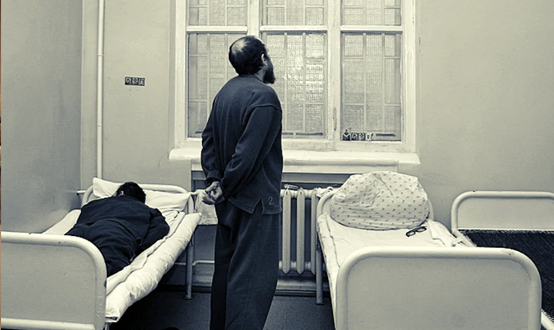
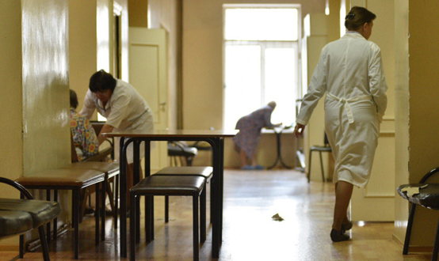

Понятие принудительных мер медицинского характера
Помимо несовершеннолетних, в теории уголовного права выделяют другую специфическую категорию граждан – лица, страдающие психическими заболеваниями. Их уголовно-правовой статус урегулирован главой 15 УК РФ. Главной особенностью этой категории лиц является невозможность применения к ним уголовной ответственности и целесообразность применения принудительных мер медицинского характера – комплекса мер, заменяющих лицам, страдающим психическими заболеваниями или зависимостями, уголовное наказание.
Статья 97 УК РФ установила основания применения принудительных мер медицинского характера:
а) совершение преступления в состоянии невменяемости;
б) наступление у лица после совершения преступления психического расстройства, делающего невозможным назначение или исполнение наказания;
в) совершение преступления лицом, страдающим психическими расстройствами, не исключающими вменяемости;
г) совершение лицом в возрасте старше восемнадцати лет преступления против половой неприкосновенности несовершеннолетнего, не достигшего четырнадцатилетнего возраста, и страдающим расстройством сексуального предпочтения (педофилией), не исключающим вменяемости.
Принудительные меры медицинского характера назначаются только в случаях, когда психические расстройства связаны с возможностью причинения этими лицами иного существенного вреда либо с опасностью для себя или других лиц (например, отличающиеся агрессивностью, суицидальным поведением и др.). В случаях, если лицо не представляет опасности по своему психическому состоянию, суд может передать материалы органам здравоохранения для их лечения или направления в психоневрологические учреждения (ч. 4 ст. 97 УК).
Цели применения принудительных мер медицинского характера (ст. 98 УК РФ):
- излечение лиц или улучшение их психического состояния;
- предупреждение совершения ими новых общественно опасных деяний.
Виды принудительных мер медицинского характера
Виды принудительных мер медицинского характера (ст. 99 УК РФ):
а) принудительное наблюдение и лечение у врача-психиатра в амбулаторных условиях (если лицо по своему психическому состоянию не нуждается в помещении в медицинскую организацию, оказывающую психиатрическую помощь в стационарных условиях);
б) принудительное лечение в медицинской организации, оказывающей психиатрическую помощь в стационарных условиях, общего типа (если лицо нуждается в лечении и наблюдении в стационарных условиях, но не требует интенсивного наблюдения);
в) принудительное лечение в медицинской организации, оказывающей психиатрическую помощь в стационарных условиях, специализированного типа (если лицо требует постоянного наблюдения);
г) принудительное лечение в медицинской организации, оказывающей психиатрическую помощь в стационарных условиях, специализированного типа с интенсивным наблюдением (если лицо представляет особую опасность для себя или других лиц и требует постоянного и интенсивного наблюдения).
При осуждении лица за преступление, совершенное в состоянии вменяемости, но нуждающемуся в лечении от алкоголизма, наркомании либо в лечении психических расстройств, не исключающих вменяемости, суд наряду с наказанием может назначить принудительную меру медицинского характера в виде амбулаторного наблюдения и лечения у психиатра.
Психические заболевания слабо поддаются излечению. Поэтому закон четко регламентирует продление, изменение и прекращение применения принудительных мер медицинского характера:
а) решение о продлении, изменении и прекращении применения этих мер принимает только суд по представлению администрации медицинской организации, осуществляющей принудительное лечение, или уголовно-исполнительной инспекции, контролирующей применение принудительных мер медицинского характера, на основании заключения комиссии врачей-психиатров;
б) лицо, которому назначена принудительная мера медицинского характера, подлежит освидетельствованию комиссией врачей-психиатров не реже одного раза в шесть месяцев для решения вопроса о наличии оснований для внесения представления в суд о прекращении применения или об изменении такой меры. Освидетельствование такого лица проводится по инициативе лечащего врача, если в процессе лечения он пришел к выводу о необходимости изменения принудительной меры медицинского характера либо прекращения ее применения, а также по ходатайству самого лица, его законного представителя и (или) близкого родственника. Ходатайство подается через администрацию медицинской организации или уголовно- исполнительную инспекцию. При отсутствии оснований для прекращения применения или изменения принудительной меры медицинского характера администрация медицинской организации или уголовно-исполнительная инспекция представляет в суд заключение для продления принудительного лечения. Первое продление принудительного лечения может быть произведено по истечении шести месяцев с момента начала лечения, в последующем продление принудительного лечения производится ежегодно;
в) в случае прекращения применения принудительного лечения в медицинской организации, оказывающей психиатрическую помощь в стационарных условиях, суд может передать необходимые материалы в отношении лица, находившегося на принудительном лечении, в федеральный орган исполнительной власти в сфере здравоохранения или орган исполнительной власти субъекта Российской Федерации в сфере здравоохранения для решения вопроса о лечении этого лица в медицинской организации, оказывающей психиатрическую помощь, или направлении этого лица в стационарное учреждение социального обслуживания для лиц, страдающих психическими расстройствами.
В случае излечения лица, у которого психическое расстройство наступило после совершения преступления, лицо может быть направлено для отбывания уголовного наказания, срок лечения в таком случае засчитывается в срок наказания из расчета один день пребывания в медицинской организации за один день лишения свободы.
Статья 104 УК РФ предусматривает порядок применения принудительных мер медицинского характера, соединенных с исполнением наказания: при лишении свободы — в месте их отбывания, при осуждении к иным видам наказаний — в учреждениях органов здравоохранения, оказывающих амбулаторную психиатрическую помощь.
В случае изменения психического состояния осужденного, требующего стационарного лечения, помещение его в психиатрический стационар или иное лечебное заведение производится в установленном порядке.